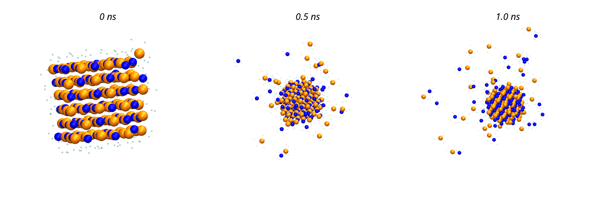
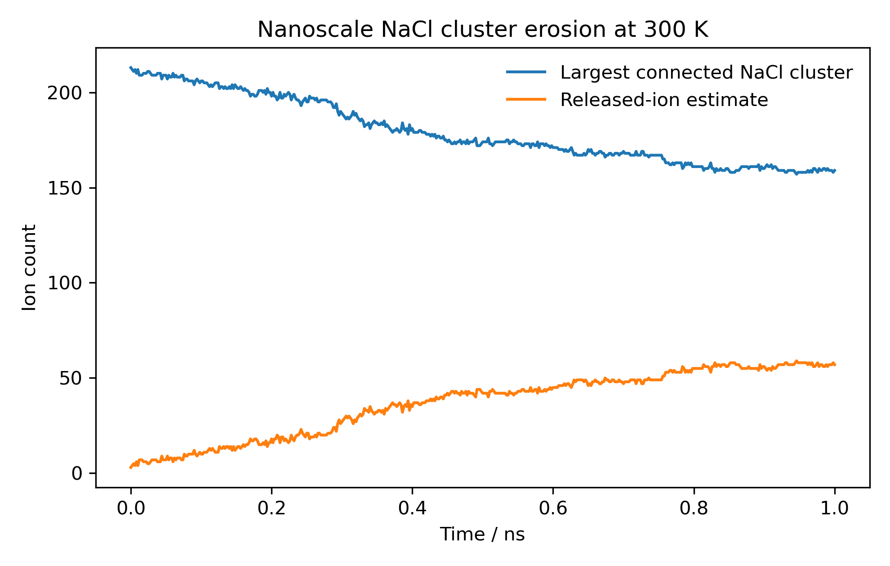

Simulation case study
NaCl dissolution in water
Following surface erosion and ion detachment from an initially ordered nanoscale salt cluster in explicit water.
What does the first stage of nanoscale dissolution look like?
The question is deliberately narrower than bulk solubility or a macroscopic dissolution rate. Starting from an ordered NaCl cluster, I wanted to resolve how the connected ionic structure changes when it is exposed to explicit water over a short molecular-dynamics trajectory.
The useful distinction is between simply seeing ions move and defining a structural quantity that can be followed through the trajectory.
Pair the trajectory with a connected-cluster measure.
The system places a small NaCl cluster in TIP4P/2005 water and follows an unrestrained 300 K trajectory. Visual inspection provides the molecular context; cluster analysis provides a quantitative summary of how many ions remain in the largest connected ionic structure.
- Water model
- TIP4P/2005
- Temperature
- 300 K
- Trajectory window
- 1 ns
- Primary observable
- Ions outside the largest connected NaCl cluster
Surface erosion is progressive rather than instantaneous.
The initial ordered cluster develops an increasingly irregular surface. Individual ions leave the connected structure and occupy the surrounding aqueous region while a substantial cluster remains.


The trajectory supports a molecular picture, not a bulk dissolution measurement.
At this scale and timescale, the useful conclusion is mechanistic and visual: exposed ions at the surface can detach from the ordered structure and become surrounded by water while the remaining cluster persists.
This nanoscale example should not be interpreted as a measured dissolution rate, equilibrium solubility, or direct prediction of macroscopic salt behavior. Those questions require different system sizes, sampling, and thermodynamic analysis.
Make the model, observable, and evidence explicit.
The case study is intended to be interpretable from a small set of clearly defined simulation and analysis choices rather than from the visualization alone.
- Simulation method
- Classical molecular dynamics
- Solvent model
- TIP4P/2005 water
- Conditions
- 300 K · 1 ns trajectory
- Analysis definition
- Largest-connected-cluster membership and ions outside that cluster
- Public evidence
- Trajectory media, representative structural frames, and cluster-erosion summary
Raw simulation inputs and full trajectory files are not distributed through this portfolio page.